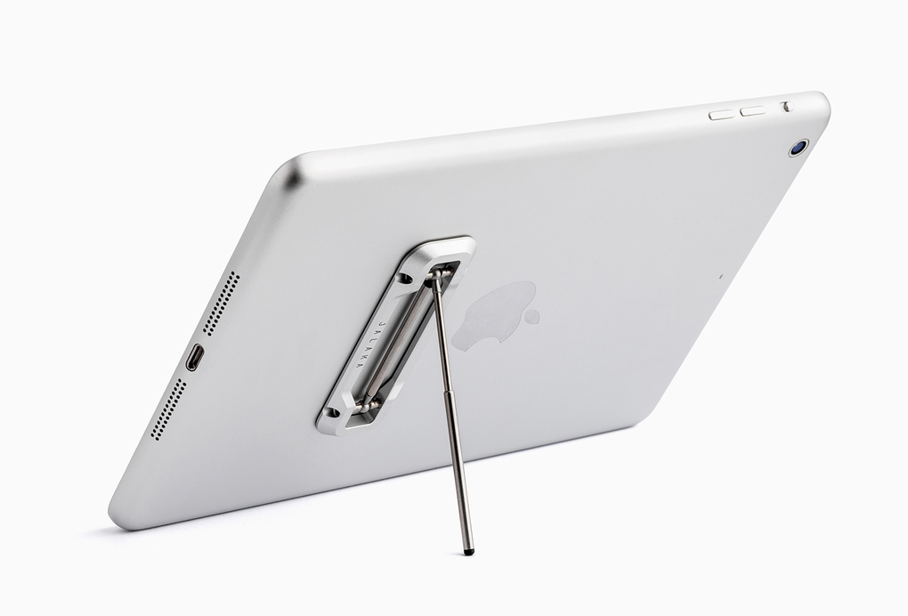

Tablet use hints and tips
Thought Jalaka was only for phones? Jalaka is strong enough to support tablet also. Just like on phones, you can adjust the angle the way you want. No more glares.
Portrait or landscape use?
Some apps works better on portrait position. That's why our product allows you to choose the most suitable way for you.
By positioning Jalaka crosswise on tablet you'll get the most stable setup for portrait use.
This setup still works for landscape use.
--------------------------------
By positioning Jalaka along the pads long side, you'll get the most stable position for landscape use. Recommended for video applications.